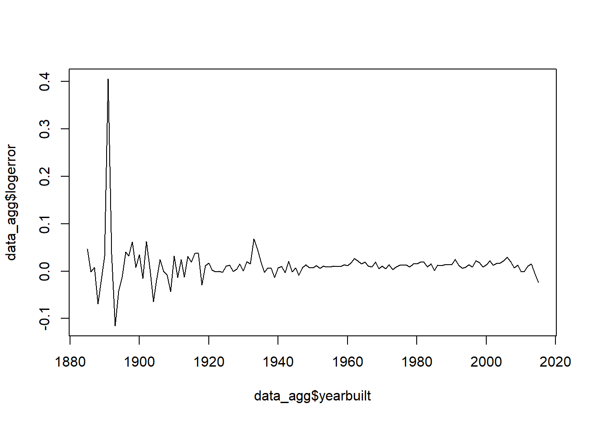

load the library needed for some basic data processing
library(caret)## Loading required package: lattice## Loading required package: ggplot2library(data.table)load the training target (logerror)
tr_lbl = read.csv("D:\\Kaggle\\Zestimate\\train_2016_v2.csv")
tr_lbl = tr_lbl[order(tr_lbl$parcelid),]load the training data set
tr_data = fread("D:\\Kaggle\\Zestimate\\properties_2016.csv")##
Read 0.0% of 2985217 rows## Warning in fread("D:\\Kaggle\\Zestimate\\properties_2016.csv"): Bumped
## column 50 to type character on data row 10354, field contains 'true'.
## Coercing previously read values in this column from logical, integer
## or numeric back to character which may not be lossless; e.g., if '00'
## and '000' occurred before they will now be just '0', and there may be
## inconsistencies with treatment of ',,' and ',NA,' too (if they occurred
## in this column before the bump). If this matters please rerun and set
## 'colClasses' to 'character' for this column. Please note that column type
## detection uses a sample of 1,000 rows (100 rows at 10 points) so hopefully
## this message should be very rare. If reporting to datatable-help, please
## rerun and include the output from verbose=TRUE.##
Read 6.7% of 2985217 rows
Read 13.4% of 2985217 rows
Read 20.1% of 2985217 rows
Read 26.8% of 2985217 rows
Read 33.5% of 2985217 rows
Read 40.2% of 2985217 rows
Read 46.6% of 2985217 rows
Read 53.3% of 2985217 rows
Read 59.6% of 2985217 rows
Read 66.3% of 2985217 rows
Read 73.0% of 2985217 rows
Read 79.4% of 2985217 rows
Read 86.1% of 2985217 rows
Read 92.8% of 2985217 rows
Read 99.5% of 2985217 rows
Read 2985217 rows and 58 (of 58) columns from 0.604 GB file in 00:00:20tr_data_2017 = fread("D:\\Kaggle\\Zestimate\\properties_2017.csv")## Warning in fread("D:\\Kaggle\\Zestimate\\properties_2017.csv"): Bumped
## column 50 to type character on data row 10395, field contains 'true'.
## Coercing previously read values in this column from logical, integer
## or numeric back to character which may not be lossless; e.g., if '00'
## and '000' occurred before they will now be just '0', and there may be
## inconsistencies with treatment of ',,' and ',NA,' too (if they occurred
## in this column before the bump). If this matters please rerun and set
## 'colClasses' to 'character' for this column. Please note that column type
## detection uses a sample of 1,000 rows (100 rows at 10 points) so hopefully
## this message should be very rare. If reporting to datatable-help, please
## rerun and include the output from verbose=TRUE.##
Read 4.0% of 2985217 rows
Read 10.7% of 2985217 rows
Read 17.4% of 2985217 rows
Read 23.8% of 2985217 rows
Read 29.8% of 2985217 rows
Read 36.2% of 2985217 rows
Read 42.2% of 2985217 rows
Read 48.6% of 2985217 rows
Read 54.9% of 2985217 rows
Read 60.6% of 2985217 rows
Read 66.0% of 2985217 rows
Read 71.4% of 2985217 rows
Read 76.4% of 2985217 rows
Read 81.4% of 2985217 rows
Read 86.8% of 2985217 rows
Read 93.1% of 2985217 rows
Read 99.8% of 2985217 rows
Read 2985217 rows and 58 (of 58) columns from 0.605 GB file in 00:00:19merge the training data with the corresponding labels using the parcelid as the key
mergedData = merge(tr_lbl, tr_data, by="parcelid")
attach(mergedData)plot logerror against year built
data = data.frame(cbind(yearbuilt, logerror))
data_agg = aggregate(data, by=list(data$yearbuilt), FUN=mean)
data_agg = data_agg[,-1]
plot(data_agg$yearbuilt, data_agg$logerror, type = "l") the logerror tends to be higher for homes built before the 1900s